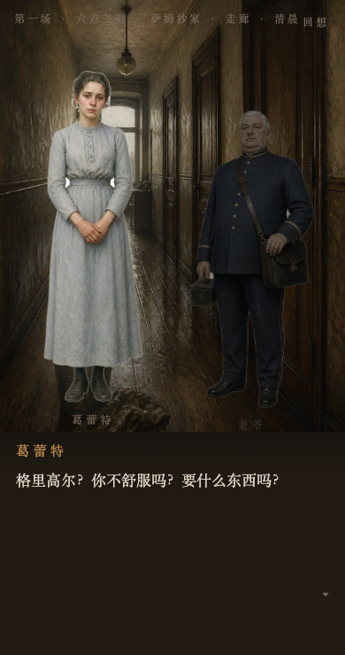
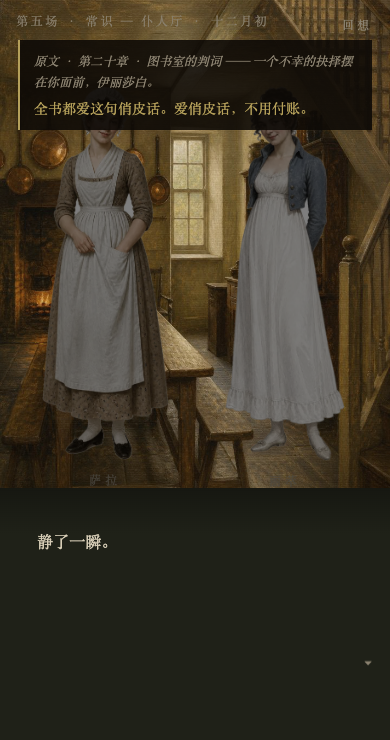

把一本书，变成你能玩进去的一场戏。
Turn any book into a visual novel you can step into.


离线可玩的单文件 HTML · 手机与桌面皆可 · 无任何外部请求与追踪
| 一 | 不覆盖全书，只取五到八场戏——视觉小说的时间单位是一场戏，不是一章 |
| 二 | 玩家默认演原著里被略过的边角人物：主线照常发生，你在缝隙里选择 |
| 三 | 每个分支点必须指得回原文的一句话，游戏内标注出处——玩，是一种重读 |
| 四 | 不做好感度，做理解度：选项是解读不是讨好；通关结算你读懂了多少 |
| 五 | 结局里必有一条是原著真实发生的事，标为正典 |
〇 版权判定 —— 作者卒年＋首发年，三档结论写进产物；有版权的书只做本地版
一 拆书选戏 —— 「压强 = 对白占比 × 交锋次数 ÷ 在场人数」，机械算出全书最锋利的几场戏，零 token
二 定角 —— 从原文 grep 出没人写的仆人、信使、邻居，验三条标准
三 写本 —— 剧本是一个 JSON，每个选择肢带原文出处，找不到出处的选项删除
四 构建自测 —— 校验构建单文件 HTML；穷举全部路径验证每个结局可达、每档判词有人能落进
开源 MIT · 一个 Claude / AI agent skill，装上后对 agent 说「把《某本书》做成游戏」即可